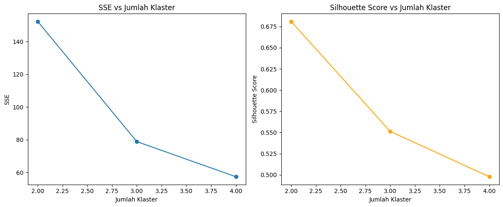

Nama: M Bihar Siddiq
NIM: 210411100167
Data mining adalah proses pengumpulan dan pengolahan data yang bertujuan untuk mengekstrak informasi penting pada data.
Proses ini dilakukan menggunakan perangkat lunak dengan bantuan perhitungan statistika, matematika, atau teknologi Artificial Intelligence (AI). Data mining sering disebut juga sebagai Knowledge Discovery in Database (KDD).
Profiling data bertujuan untuk memahami karakteristik dataset, termasuk distribusi data dan nilai statistiknya.
import pandas as pd
df = pd.read_csv("data.csv")
print(df.describe())
print(df.info())
Visualisasi membantu memahami pola dan distribusi data dengan lebih baik.
import seaborn as sns
import matplotlib.pyplot as plt
sns.histplot(df['kolom_numerik'], bins=30, kde=True)
plt.show()
Menganalisis tipe data yang digunakan dalam dataset.
print(df.dtypes)
df['kategori'] = df['kategori'].astype('category')
df['tanggal'] = pd.to_datetime(df['tanggal'])
KNN dapat digunakan untuk mendeteksi outlier berdasarkan jarak antara titik data.
from sklearn.neighbors import NearestNeighbors
import numpy as np
df_numeric = df.select_dtypes(include=[np.number])
k = 5
nbrs = NearestNeighbors(n_neighbors=k).fit(df_numeric)
distances, indices = nbrs.kneighbors(df_numeric)
outlier_scores = distances.mean(axis=1)
threshold = np.percentile(outlier_scores, 95)
df['outlier'] = outlier_scores > threshold
K-Means adalah algoritma pengelompokan berbasis centroid yang mempartisi data menjadi beberapa kelompok berdasarkan jarak antar centroid.
from sklearn.datasets import load_iris
from sklearn.cluster import KMeans
from sklearn.metrics import silhouette_score, accuracy_score
from scipy.stats import mode
import numpy as np
import matplotlib.pyplot as plt
# Load data iris
iris = load_iris()
X = iris.data
y_true = iris.target
sse = []
silhouette_scores = []
accuracy_scores = []
k_range = range(2, 5)
for k in k_range:
kmeans = KMeans(n_clusters=k, random_state=42)
kmeans.fit(X)
sse.append(kmeans.inertia_)
sil_score = silhouette_score(X, kmeans.labels_)
silhouette_scores.append(sil_score)
labels = np.zeros_like(kmeans.labels_)
for i in range(k):
mask = (kmeans.labels_ == i)
labels[mask] = mode(y_true[mask], keepdims=True).mode[0]
acc = accuracy_score(y_true, labels)
accuracy_scores.append(acc)
print(f"Jumlah Klaster: {k}")
print(f" - SSE: {kmeans.inertia_:.2f}")
print(f" - Silhouette Score: {sil_score:.4f}")
print(f" - Akurasi: {acc:.4f}")
print("-" * 50)
# Plot
plt.figure(figsize=(12, 5))
plt.subplot(1, 2, 1)
plt.plot(k_range, sse, marker='o')
plt.title('SSE vs Jumlah Klaster')
plt.xlabel('Jumlah Klaster')
plt.ylabel('SSE')
plt.subplot(1, 2, 2)
plt.plot(k_range, silhouette_scores, marker='o', color='orange')
plt.title('Silhouette Score vs Jumlah Klaster')
plt.xlabel('Jumlah Klaster')
plt.ylabel('Silhouette Score')
plt.tight_layout()
plt.show()

untuk menggunakan metode fuzzy-c-means kita bisa menggunakan perintah berikut:
!pip install -q pandas scikit-learn openpyxl
from google.colab import files
uploaded = files.upload()
The Fuzzy C-Means algorithm can be defined as follows:
def fuzzy_c_means(X, n_clusters=2, m=2, max_iter=100, error=1e-5):
n_samples = X.shape[0]
U = np.random.dirichlet(np.ones(n_clusters), size=n_samples)
for iteration in range(max_iter):
U_old = U.copy()
centers = np.dot(U.T ** m, X) / np.sum(U.T ** m, axis=1, keepdims=True)
for i in range(n_samples):
for j in range(n_clusters):
denominator = sum(
(np.linalg.norm(X[i] - centers[j]) / np.linalg.norm(X[i] - centers[k])) ** (2 / (m - 1))
for k in range(n_clusters)
)
U[i, j] = 1 / denominator
if np.linalg.norm(U - U_old) < error:
break
return centers, U
Setelah menjalankan algoritma Fuzzy C-Means, pusat dari cluster adalah:
Pusat Cluster (dalam bentuk data ternormalisasi):
Cluster 1: [0.91465179 0.91465179]
Cluster 2: [0.16101718 0.16101718]